S04 · B07 native gallery
Selected native PNG/AX pairs. Historical before captures and diagnostics are separate; source/test/count limits are in manifest.
Pending or limited- phone-first Preferred selection in filtered results: capture absent or selector not executed; Completed mixed result; only nonfailed requested selectors attributed
- phone-first Preferred selection after reentry: capture absent or selector not executed; Completed mixed result; only nonfailed requested selectors attributed
- phone-first Current MAX searched exercise and switch: capture absent or selector not executed; Completed mixed result; only nonfailed requested selectors attributed
- phone-retry1 Preferred selection after reentry: capture absent or selector not executed; Completed mixed result; only nonfailed requested selectors attributed
- phone-retry1 Current MAX searched exercise and switch: capture absent or selector not executed; Completed mixed result; only nonfailed requested selectors attributed
- ipad-first Preferred selection after reentry: capture absent or selector not executed; Completed mixed result; only nonfailed requested selectors attributed
- ipad-first Current MAX searched exercise and switch: capture absent or selector not executed; Completed mixed result; only nonfailed requested selectors attributed
- Duo closed and open have no B07 current-source provider/capture; historical before only
- Compact phone MAX S04 remains unreached; iPad retry passed normal selection/reentry and MAX list selector
- Maximum Dynamic Type completion is represented only by explicit passed MAX selectors; failed-selector MAX frames are diagnostic
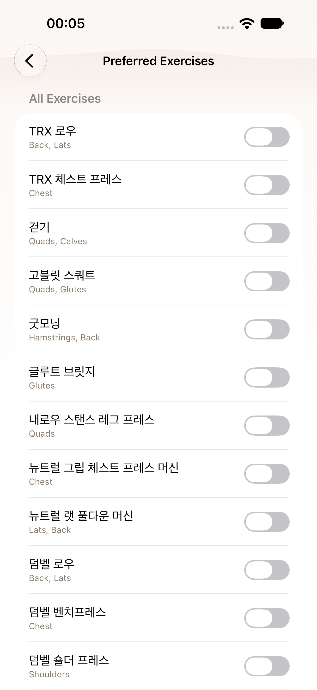
regular · before
Historical S04 baseline
443a32ca4fe8
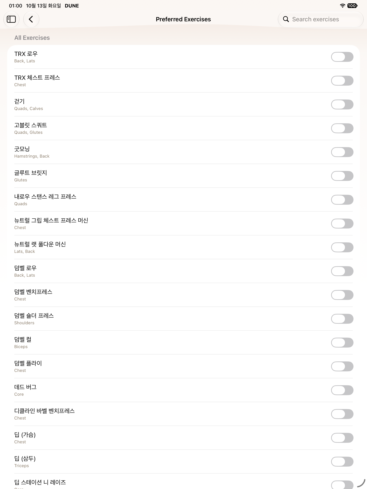
ipad · before
Historical S04 baseline
443a32ca4fe8
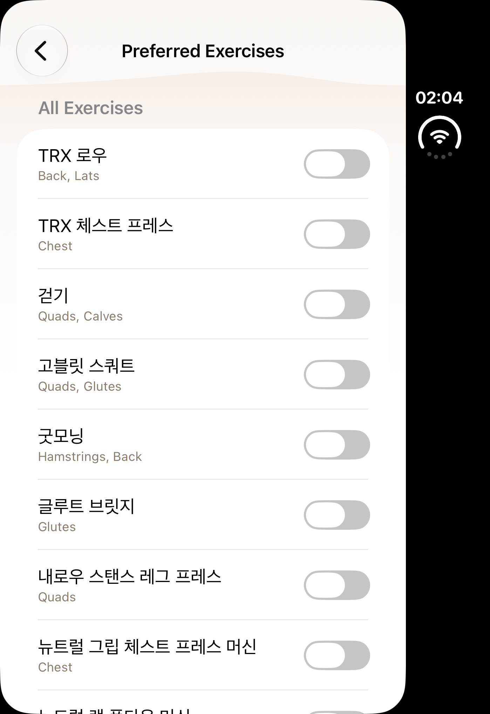
duo · before
Historical S04 baseline
443a32ca4fe8
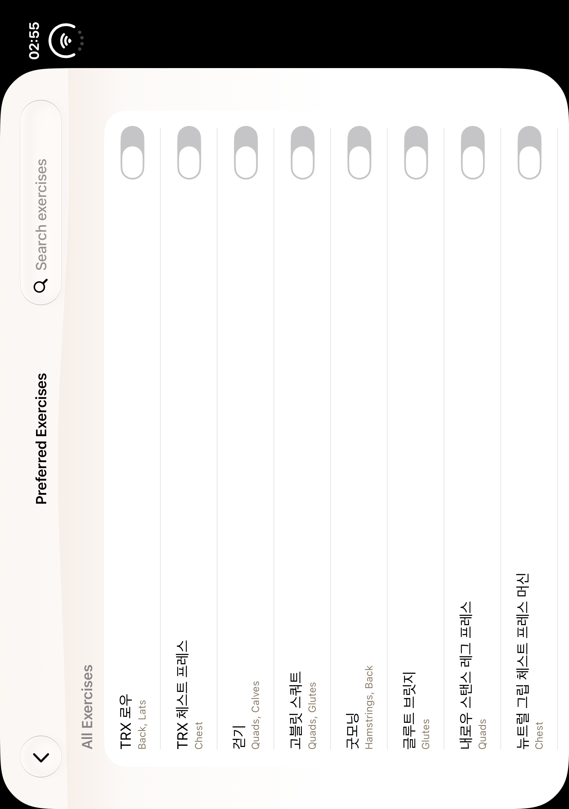
duo-open · before
Historical S04 baseline
443a32ca4fe8
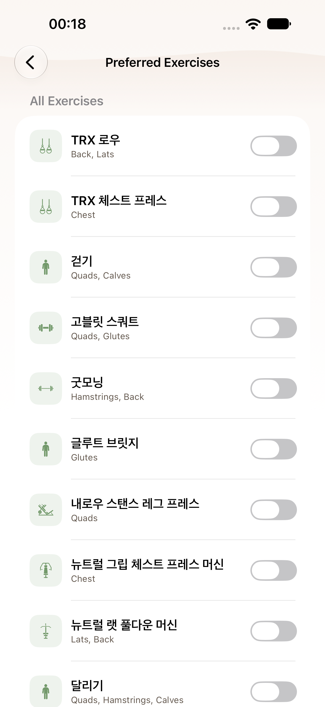
regular · diagnostic
Current unfiltered Preferred Exercises List (failed selector; diagnostic)
2930ba45dd41
AX treeregular · diagnostic
Current unfiltered Preferred Exercises List (failed selector; diagnostic)
47feceb7b4d6
AX tree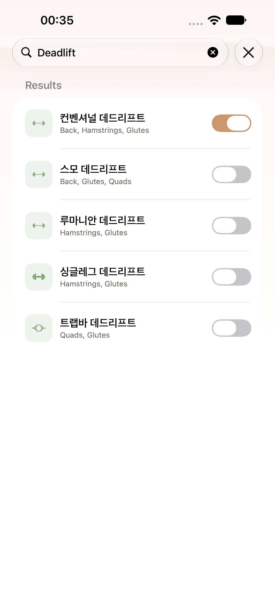
regular · diagnostic
Preferred selection in filtered results (failed selector; diagnostic)
47feceb7b4d6
AX tree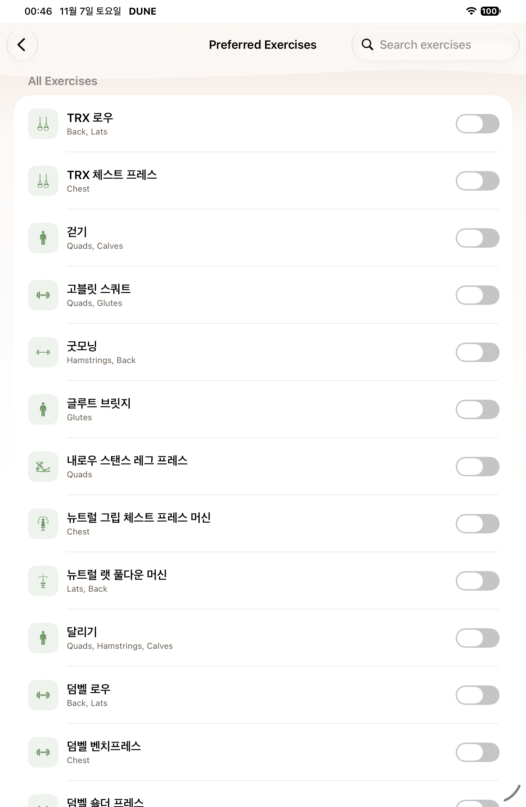
ipad · diagnostic
Current unfiltered Preferred Exercises List (failed selector; diagnostic)
23c6d0948808
AX tree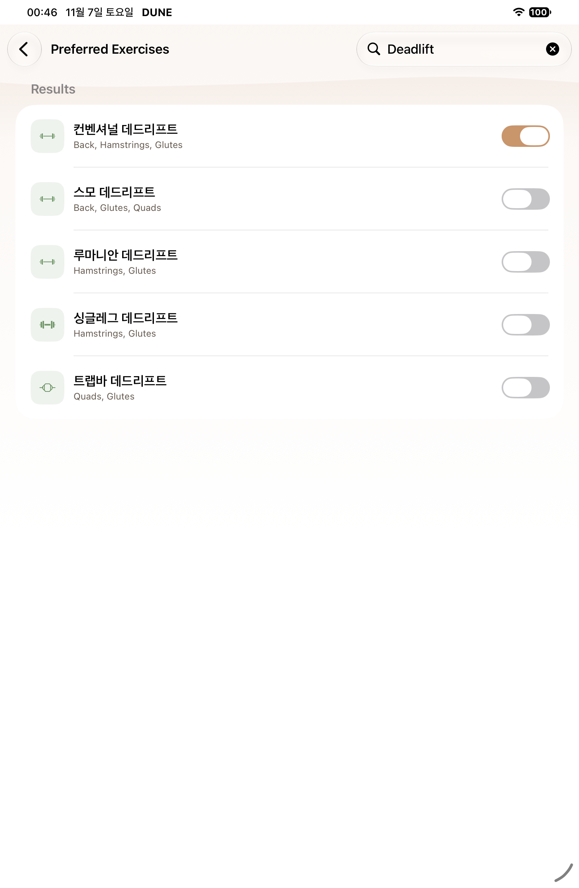
ipad · diagnostic
Preferred selection in filtered results (failed selector; diagnostic)
23c6d0948808
AX tree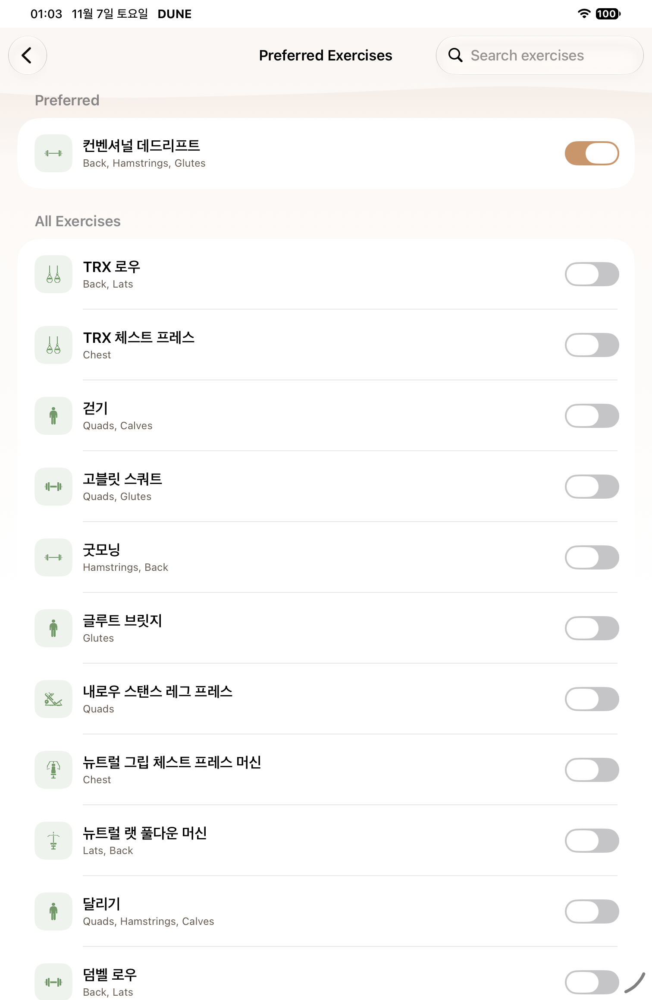
ipad · after
Current unfiltered Preferred Exercises List
1c1b4bf26f6c
AX treeipad · after
Preferred selection in filtered results
1c1b4bf26f6c
AX tree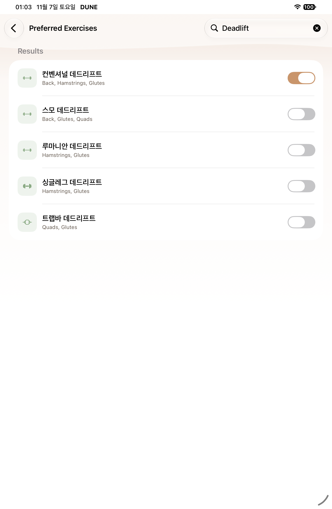
ipad · after
Preferred selection after reentry
1c1b4bf26f6c
AX tree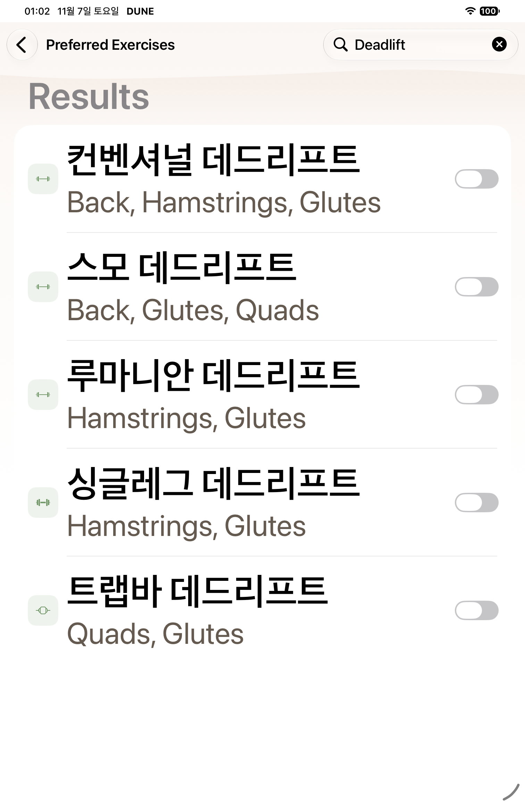
ipad · after
Current MAX searched exercise and switch
1c1b4bf26f6c
AX tree